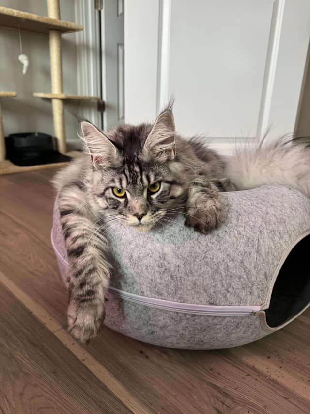

rules_cloudrun
Cloud Run configuration is easy to duplicate and difficult to validate. These Bazel rules validate inputs, generate typed manifests, and support digest-pinned service, job, and worker deployments.
Cloud Run configuration is easy to duplicate and difficult to validate. These Bazel rules validate inputs, generate typed manifests, and support digest-pinned service, job, and worker deployments.
A search-grounded Discord AI system with multi-cloud and multi-LLM-provider support. It can run as separate gateway and worker microservices or as a single deployment, with optional DynamoDB-backed state.
Reusable Go building blocks for production command-line applications: stack-aware errors, graceful shutdown, and retry behavior designed around resilient operations.
A small Go service that watches a changing public IP and keeps Cloudflare DNS records synchronized, removing a fragile manual step from home-lab operations.
Merged
Stops builds using
--remote_download_outputs=toplevel from re-fetching
outputs an earlier invocation had already downloaded.
Approved
Fixes exclusive-if-local incorrectly limiting
concurrency when actions use remote execution.
In review
Adds an opt-in parallel serialization path for
bazel query --output=streamed_proto, serializing
targets concurrently while preserving output order.
Merged
Restores Pigz compatibility with Bazel 9.
Merged
Adds configurable directory and file permissions to JavaScript image layers.
Merged
#765 and #767 correct multi-version package selection and OS-specific PostgreSQL yum GPG key handling.
At Apex, I architected Bazel CI that reduced P50 build and test time by 65%+, P90 by 80%, and P95 from 1h 25m to 25 minutes, with sub-four-minute P50 builds across 9,000+ test targets. I also designed OCI-compliant containers for Go, Java, TypeScript, and Python.
I designed services and tooling for manifests, configuration, and GitOps orchestration in a 26M+ line monorepo supporting 800+ daily builds, 900+ applications and services, and thousands of deployments each day.
At the OSU Open Source Lab, I built infrastructure for hundreds of clients and implemented multi-zone automatic PostgreSQL failover serving over 150 organizations.
— Present
Apex Fintech Solutions
—
Oregon State University Open Source Lab
—
Lithia & Driveway
—
Coding with Kids
—
Oregon State University · Systems and distributed systems emphasis
I’m an infrastructure and software engineer interested in distributed systems, build systems, cloud infrastructure, and large-scale compute clusters.
Outside of work, I follow Formula 1, hike around the Pacific Northwest, and run OSS projects in my homelab. I also share the house with three cats—Fish, Milo, and Ramen—who are less interested in reliable infrastructure.
